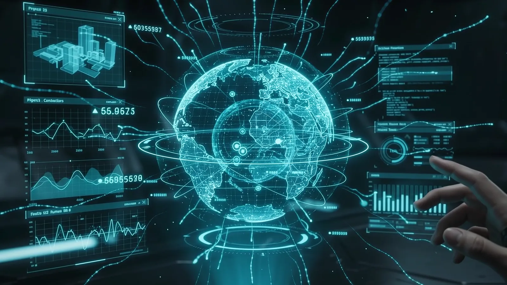
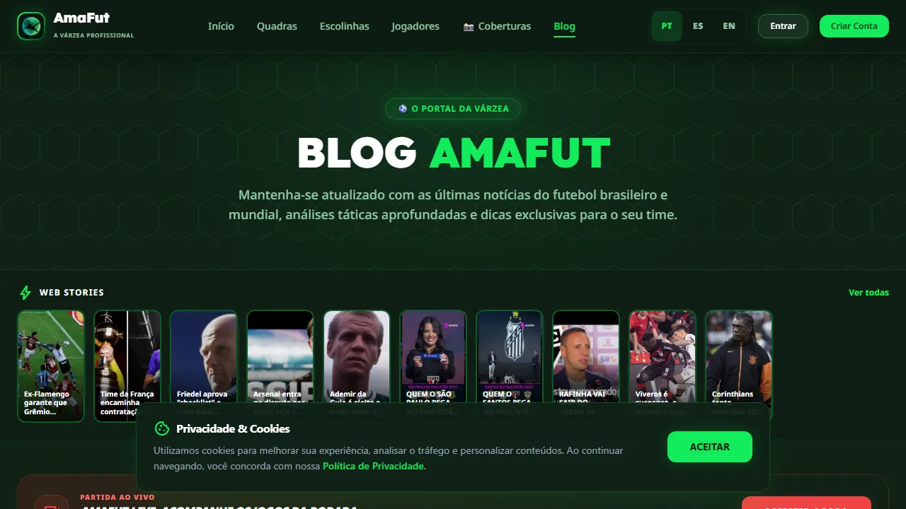

Apps B2C & B2B
Experiências táteis para iOS, Android e Web com sincronização offline-first e alta retenção.

Na Nexvia Tech, projetamos ecossistemas digitais completos para empresas (B2B) e consumidores finais (B2C) — unindo engenharia de alto desempenho em saúde, ciência, educação, entretenimento e esporte.
Nossa arquitetura integra motores matemáticos, processamento neural em GPU e interfaces reativas que operam com fluidez no navegador, no celular ou nativamente no computador.
Desenvolvimento sob encomenda, plataformas licenciáveis e consultoria especializada em Tecnologia da Informação.
Atuamos em duas frentes complementares: construímos infraestrutura e sistemas sob medida para organizações (B2B) e lançamos aplicativos diretos ao consumidor (B2C) com retenção, velocidade e acabamento visual impecável.
Passe o cursor ou toque nas lâminas translúcidas ao lado para inspecionar nossas camadas de entrega, ou alterne entre o Tema Claro e o Tema Escuro no topo da página.
Experiências táteis para iOS, Android e Web com sincronização offline-first e alta retenção.
Sistemas web e portais em nuvem com alta capacidade operacional, segurança robusta e disponibilidade contínua.
Aplicações desktop nativas com processamento gráfico acelerado, motores de cálculo e resposta imediata.
Inteligência artificial aplicada a áudio, automações complexas e análise preditiva sem alucinação.
Desenvolvimento de programas de computador sob medida para regras de negócio críticas, integrações e fluxos proprietários.
Criação e licenciamento de plataformas customizáveis e produtos prontos para escala comercial B2C e B2B.
Consultoria estratégica em tecnologia da informação, modernização de sistemas, pipelines de dados e modelos de IA sem alucinação.
Suporte técnico especializado, manutenção evolutiva, conformidade LGPD e observabilidade contínua em produção.
Explore as soluções projetadas e desenvolvidas pela Nexvia Tech. Selecione uma área de atuação ou clique em qualquer projeto para inspecionar sua arquitetura técnica, telas, stack e links em produção.
Portal esportivo e notícias de futebol com gestão de torneios e quadras parceiras.
Portal oficial de cidadania viária e logística reversa automotiva nacional.
Catálogo digital e soluções industriais de alumínio e embalagens de alta precisão.
Simulador educativo que desmistifica probabilidades e cálculos em corridas dinâmicas.
Plataforma médica multi-perfil com teleconsulta, prescrições e laudos rastreáveis.
Estúdio musical com separação inteligente de voz/instrumentos e transmissão multi-tela.
Software desktop Windows nativo para simulação de microestruturas metálicas em 3D/2D.
Descoberta e qualificação de pesquisadores com auditoria de evidências anti-alucinação.
Motor cinematográfico de scrollytelling 60fps ativo no palco interativo desta página.

Plataforma completa para gestão, notícias e comunidade do futebol amador e semiprofissional. O portal reúne análises táticas, novidades de competições, acompanhamento de quadras parceiras e conteúdos de cobertura esportiva com interface rápida, moderna e totalmente responsiva.
Além do palco principal no topo da página, você pode testar aqui os outros dois vídeos da pasta src/ otimizados sem áudio e com keyframes densos (GOP=8) para resposta imediata ao dedo na tela touch ou ao arrastar do mouse.
Dica interativa: Deslize o dedo horizontalmente sobre o quadro do vídeo (ou mova o mouse com o botão pressionado / use a barra abaixo) para avançar e retroceder cada detalhe em tempo real.
Seja um aplicativo B2C para milhares de usuários, uma plataforma SaaS B2B ou um sistema técnico de alta complexidade para PC e Web, você fala diretamente com quem projeta e escreve o código.